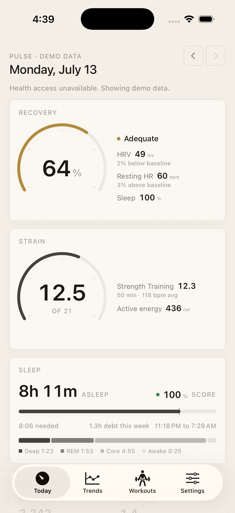
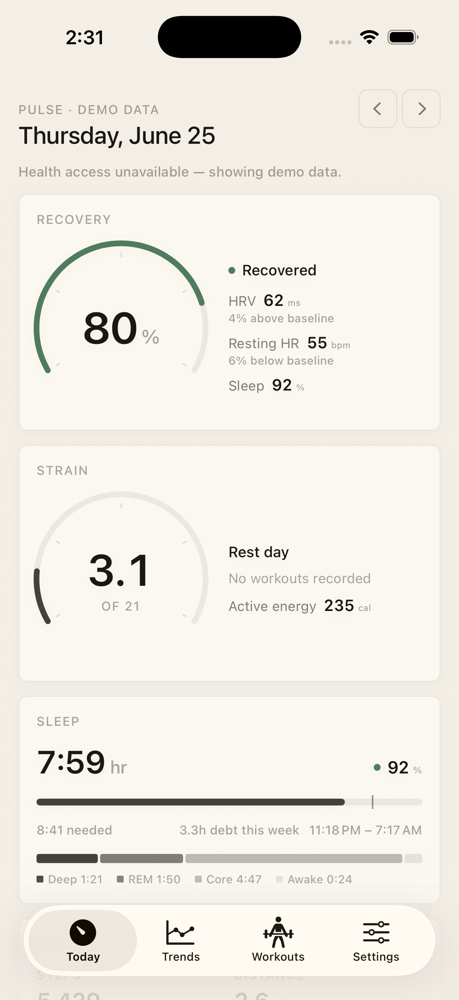
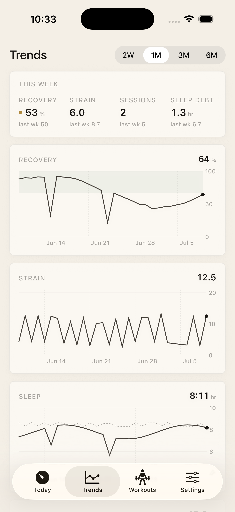
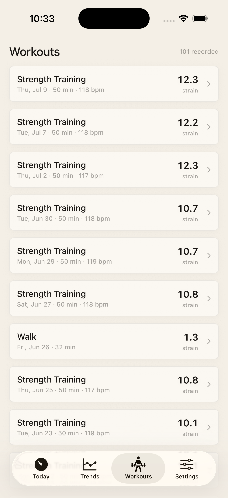
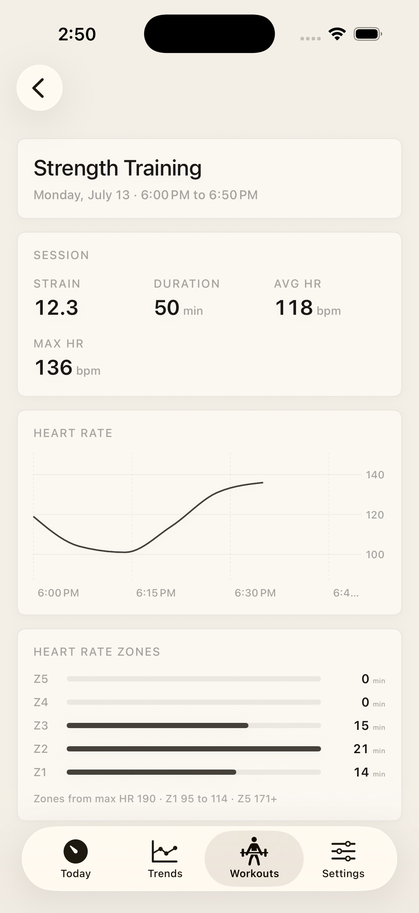
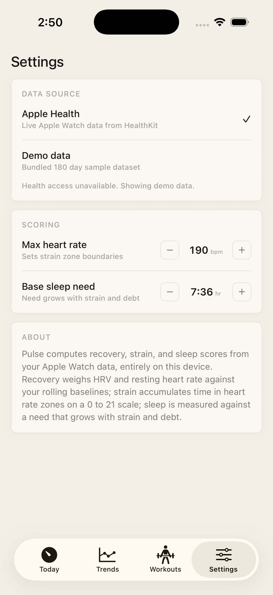

My watch tracked my sleep, my heart, and every workout, then buried it in an app I stopped opening. Pulse turns it into three scores I read each morning.

Each one measured against your own history, not a population.
How rested you are, from HRV and resting heart rate against your baseline.
How hard the day was, from time in each heart rate zone.
How much you slept against what the day actually needed.
Color only where a number means something.





SwiftUI and Swift Charts, reading the last 180 days from HealthKit on the phone. No dependencies, no backend.
The scoring is plain Swift, so any day's number traces straight back to the data behind it. The design stays out of the way, closer to a measuring instrument than a fitness app.